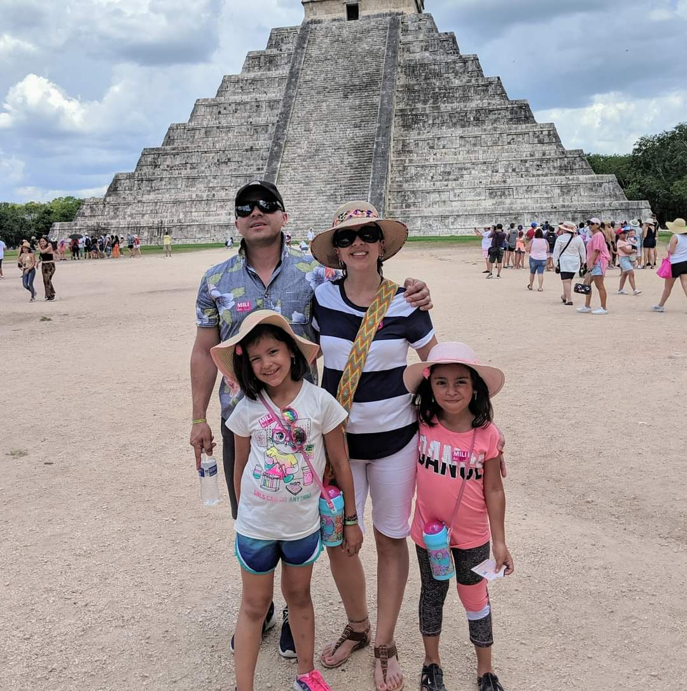

Know Me A Little More...
I consider myself a woman passionate about technology and this led me to get initially experience as a mommy blogger and influencer to then take me to create my great life project: "Red Mujeres x El Mundo". A world community that promotes the equality of women in the fields of education, technology and Entrepreneurship.
Some of my favorite photos...
